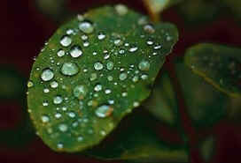

Precipitation occurs when so much water has condensed that the air cannot hold it anymore.
The clouds get heavy and water falls back to the earth in the form of rain, hail, sleet or snow.

Precipitation is water released from clouds in the form of rain, freezing rain, sleet, snow, or hail.
It is the primary connection in the water cycle that provides for the delivery of atmospheric water to the Earth.
Most precipitation falls as rain.